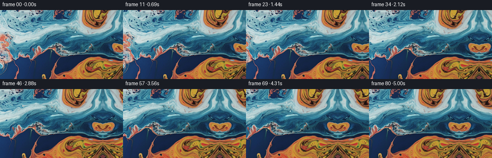
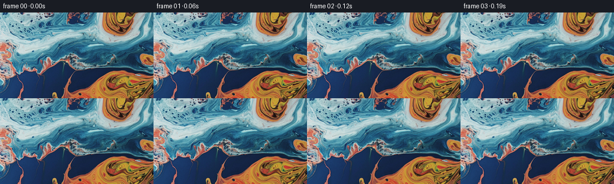
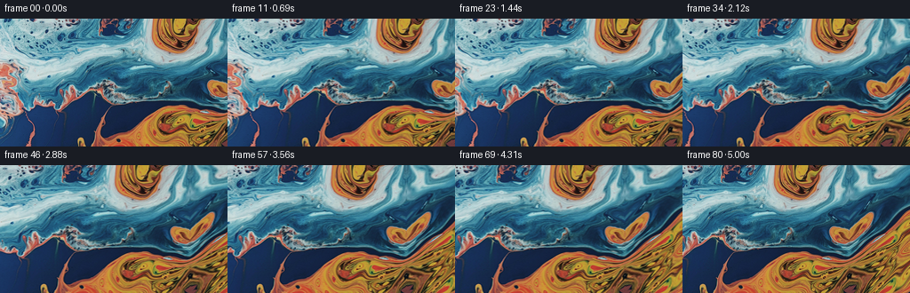

← 本轮 smoke 总览traex/GPT-5.6-Sol · 0002_s3
vision-agent · 256×144 · 16.0 FPS · 81 帧 · 状态 complete · 输出 tokens 5442
原始任务a close up of a blue and orange liquid, camera pans right
当前保存结果
已保存候选与代码修改
这里按时间展示外部捕获的候选，每份均可单独播放。保存新版本不等于完成视觉检查；下方工具证据记录实际看过的图。
候选 01 · 2026-11-09T01:01:29.927760+00:00 · 点开播放与检查图
inspection.png

transition_check.png

代码变化
--- 上一保存版本
+++ 本次保存版本
@@ -0,0 +1,102 @@
+"""Generate a slow rightward camera pan across the supplied marbled liquid.
+
+The input is already a richly detailed close-up, so the most faithful way to
+animate it is to preserve those details rather than redraw them. A small
+panorama is made by continuing the cropped structures at the right edge with
+a smoothly deformed reflection. Sub-pixel crops then provide a clean camera
+move. The first frame bypasses all resampling and is therefore bit-exact.
+"""
+
+from pathlib import Path
+
+import cv2
+import numpy as np
+from PIL import Image
+
+import artifact_io
+
+
+N_FRAMES = 81
+HEIGHT = 144
+WIDTH = 256
+PAN_PIXELS = 68.0
+EXTENSION = 76
+
+
+def smoothstep(x):
+ """Cubic ease for a gentle start and stop to the camera move."""
+ return x * x * (3.0 - 2.0 * x)
+
+
+def build_panorama(image):
+ """Extend the source on the right while exactly retaining its pixels.
+
+ A plain reflected border would preserve edge continuity but look overly
+ symmetric once exposed. Here the reflection is progressively and
+ smoothly bent in both axes, which suits the irregular liquid marbling and
+ keeps position and first derivative continuous at the source boundary.
+ """
+ h, w = image.shape[:2]
+ panorama = np.empty((h, w + EXTENSION, 3), dtype=np.uint8)
+ panorama[:, :w] = image
+
+ yy, qq = np.mgrid[0:h, 1 : EXTENSION + 1].astype(np.float32)
+ u = qq / float(EXTENSION)
+ envelope = smoothstep(u)
+
+ # Trace backwards into the source, like a reflected continuation, while
+ # slowly curving the sampled material so no obvious mirror develops.
+ src_x = (w - 1.0) - 0.91 * qq
+ src_x += envelope * (
+ 2.0 * np.sin(yy / 17.0 + qq / 13.0)
+ + 0.8 * np.sin(yy / 6.8 - qq / 9.5)
+ )
+ src_y = yy + envelope * (
+ 3.3 * np.sin((yy + 0.48 * qq) / 18.0)
+ + 1.5 * np.sin((yy - 0.7 * qq) / 8.7)
+ + 0.8 * np.sin(qq / 8.0)
+ )
+
+ continued = cv2.remap(
+ image,
+ src_x.astype(np.float32),
+ src_y.astype(np.float32),
+ interpolation=cv2.INTER_CUBIC,
+ borderMode=cv2.BORDER_REFLECT_101,
+ )
+ panorama[:, w:] = continued
+ return panorama
+
+
+def render_frames(image):
+ panorama = build_panorama(image)
+ base_y, base_x = np.mgrid[0:HEIGHT, 0:WIDTH].astype(np.float32)
+ frames = np.empty((N_FRAMES, HEIGHT, WIDTH, 3), dtype=np.uint8)
+ frames[0] = image # Contract: frame 00 must be pixel-identical.
+
+ for i in range(1, N_FRAMES):
+ phase = i / float(N_FRAMES - 1)
+ offset = PAN_PIXELS * smoothstep(phase)
+ map_x = base_x + np.float32(offset)
+ frame = cv2.remap(
+ panorama,
+ map_x,
+ base_y,
+ interpolation=cv2.INTER_CUBIC,
+ borderMode=cv2.BORDER_REFLECT_101,
+ )
+ frames[i] = frame
+ return frames
+
+
+def main():
+ case_dir = Path(__file__).resolve().parent
+ image = np.asarray(Image.open(case_dir / "first_frame.png").convert("RGB"))
+ if image.shape != (HEIGHT, WIDTH, 3):
+ raise ValueError(f"Unexpected input shape: {image.shape}")
+ frames = render_frames(image)
+ artifact_io.save(frames, case_dir)
+
+
+if __name__ == "__main__":
+ main()
候选 02 · 2026-11-09T01:02:01.779531+00:00 · 点开播放与检查图
inspection.png

transition_check.png

代码变化
--- 上一保存版本
+++ 本次保存版本
@@ -46,12 +46,15 @@
# Trace backwards into the source, like a reflected continuation, while
# slowly curving the sampled material so no obvious mirror develops.
- src_x = (w - 1.0) - 0.91 * qq
+ src_x = (w - 1.0) - 0.78 * qq
src_x += envelope * (
2.0 * np.sin(yy / 17.0 + qq / 13.0)
+ 0.8 * np.sin(yy / 6.8 - qq / 9.5)
)
- src_y = yy + envelope * (
+ # A diagonal drift starts immediately. This is important: a zero-slope
+ # vertical map would reveal the construction as a bilateral reflection.
+ # The drift instead continues border strokes on a flowing diagonal.
+ src_y = yy + 0.72 * qq + envelope * (
3.3 * np.sin((yy + 0.48 * qq) / 18.0)
+ 1.5 * np.sin((yy - 0.7 * qq) / 8.7)
+ 0.8 * np.sin(qq / 8.0)
候选 03 · 2026-11-09T01:02:06.783968+00:00 · 点开播放与检查图
inspection.png

transition_check.png
代码变化
代码未变化；重新保存了产物。
可观测工具行为
命令 1 · 2026-11-09T01:00:37.995048+00:00/bin/bash -lc "cat prompt.txt && printf '\\n---RULES---\\n' && cat GENERATION_RULES.md"
exit 0 命令 2 · 2026-11-09T01:00:38.403841+00:00/bin/bash -lc "which ffmpeg; ffmpeg -version | head -3; python - <<'PY'
import importlib.util
for m in ['cv2','numpy','PIL','scipy','skimage']:
print(m, bool(importlib.util.find_spec(m)))
PY"
exit 0 命令 3 · 2026-11-09T01:00:38.587642+00:00/bin/bash -lc "find . -maxdepth 2 -type f -printf '%p %s bytes\\n' | sort"
exit 0 命令 4 · 2026-11-09T01:00:44.419228+00:00/bin/bash -lc "cat task_spec.json; sed -n '1,260p' artifact_io.py"
exit 0 命令 5 · 2026-11-09T01:00:44.935023+00:00/bin/bash -lc "python - <<'PY'
from PIL import Image
import numpy as np
im=np.array(Image.open('first_frame.png').convert('RGB'))
print(im.shape,im.dtype,im.min(),im.max(),im.mean(axis=(0,1)))
PY"exit 0 命令 6 · 2026-11-09T01:01:26.925258+00:00/bin/bash -lc "python generate.py && python - <<'PY'
from PIL import Image
import numpy as np
z=np.load('pixels.npz')['pixels']
first=np.array(Image.open('first_frame.png').convert('RGB'))
p=(first[:,:,0].astype(np.uint32)<<16)|(first[:,:,1].astype(np.uint32)<<8)|first[:,:,2]
print('tensor',z.shape,z.dtype,'first exact',np.array_equal(z[:,:,0],p))
# per-frame mean absolute delta decoded from frame pngs
ims=[np.array(Image.open(f'frames/{i:02d}.png')) for i in range(81)]
d=[np.abs(ims[i].astype(float)-ims[i-1]).mean() for i in range(1,81)]
print('delta mean/min/max',np.mean(d),min(d),max(d),'end-vs-first',np.abs(ims[-1].astype(float)-ims[0]).mean())
PY"exit 0 命令 7 · 2026-11-09T01:01:59.622468+00:00/bin/bash -lc 'python generate.py'
exit 0 命令 8 · 2026-11-09T01:02:17.684516+00:00/bin/bash -lc "python - <<'PY'
import cv2
from pathlib import Path
files=[str(Path('frames')/f'{i:02d}.png') for i in range(81)]
im=cv2.imread(files[0]); h,w=im.shape[:2]
out=cv2.VideoWriter('preview.mp4',cv2.VideoWriter_fourcc(*'mp4v'),16,(w,h))
for f in files: out.write(cv2.imread(f))
out.release()
print(Path('preview.mp4').stat().st_size)
PY
python - <<'PY'
import numpy as np
from PIL import Image
z=np.load('pixels.npz')['pixels']; im=np.array(Image.open('first_frame.png'))
p=(im[...,0].astype('u4')<<16)|(im[...,1].astype('u4')<<8)|im[...,2]
assert z.shape==(144,256,81) and np.array_equal(z[...,0],p)
assert len(list(__import__('pathlib').Path('frames').glob('*.png')))==81
print('validated: 81 frames, exact first frame, RGB output')
PY"exit 0 视觉工具实际返回图片 1

视觉工具实际返回图片 2

保存候选 3 份；完成命令 8 次；可验证图片返回 2 张。原始 API 响应与完整日志保留在本地。